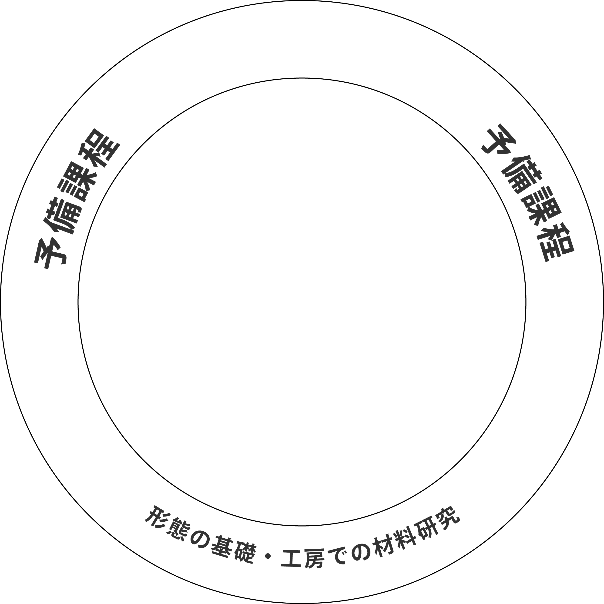
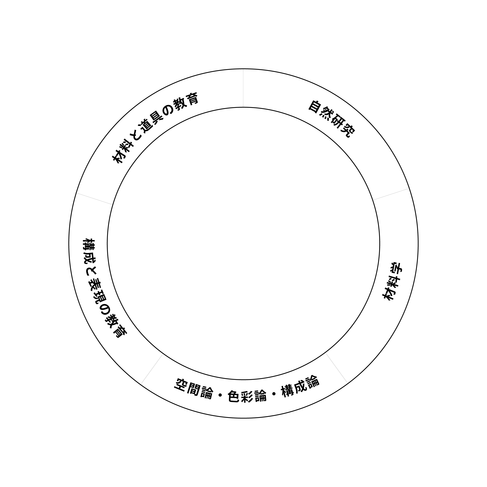
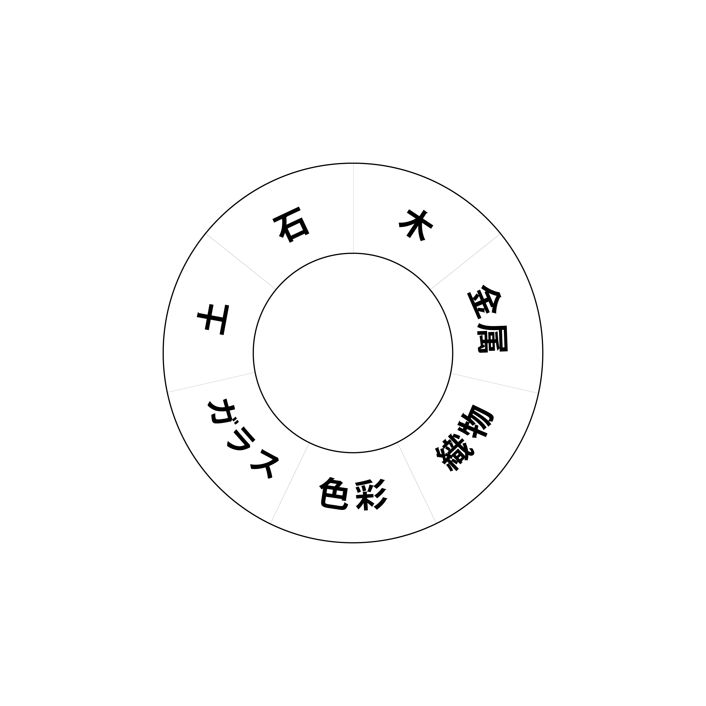
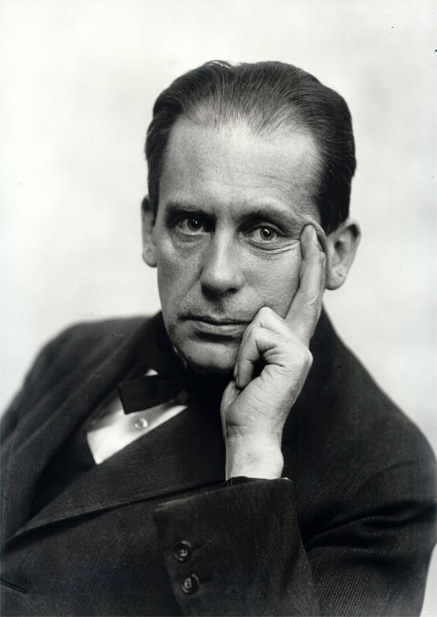
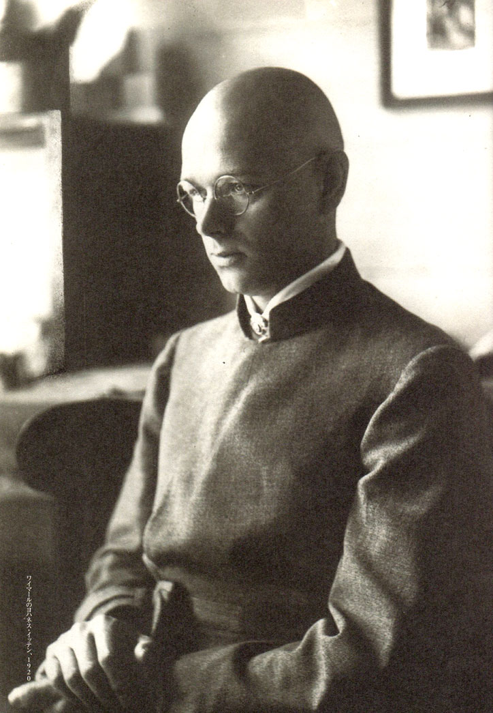
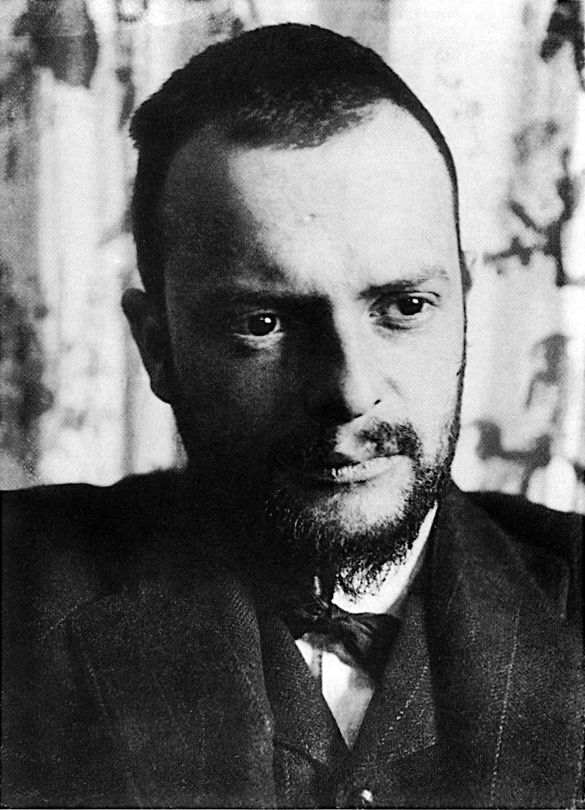
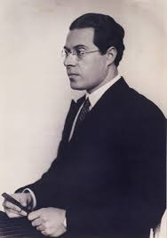
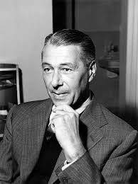
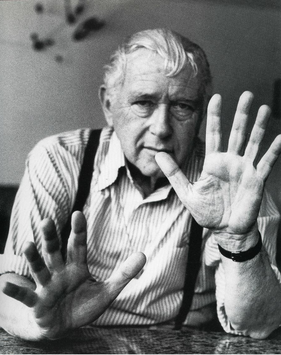
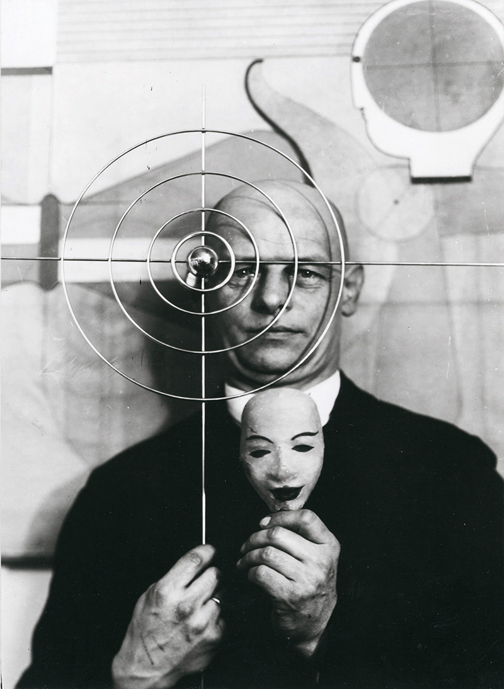

アーツ＆クラフツ運動は、手仕事の価値を再発見しました。アール・ヌーヴォーは、自然の曲線をデザインに取り入れます。ロシア構成主義は、機械時代の機能美を追求し、アールデコは装飾とモダンを融合させました。
バウハウスは、これらの流れに響きながら、機能と美の新しい基準を生み出しました。それが、現代デザインの原点です。
バウハウスは、1919年にヴァルター・グロピウスが創設した学校です。
彼が目指したのは、と工業の融合。
装飾を排し、機能に根ざした美しさを追求しました。
教育は工房を中心に展開され、学生たちは素材に触れ、手を動かし、形を生み出すことを学びます。
ヨハネス・イッテンの色彩理論
ラズロ・モホリ＝ナジの写真実験
マルセル・ブロイヤーの家具デザイン
それらすべてが、「形態は機能に従う」という思想を支えています。
その理念は、今もなお、私たちのデザインに息づいています。



バウハウスのカリキュラムは、円環の図で示されます。中心に「建築」が据えられ、その周囲に素材の理解と形態の探求が広がります。実践を通じた学びが、自然に展開される構造です。
アーツ＆クラフツ運動は、手仕事の価値を再発見しました。アール・ヌーヴォーは、自然の曲線をデザインに取り入れます。ロシア構成主義は、機械時代の機能美を追求し、アールデコは装飾とモダンを融合させました。
バウハウスは、これらの流れに響きながら、機能と美の新しい基準を生み出しました。それが、現代デザインの原点です。
イッテンは、色彩を体系的に理解するために「色相環」を提唱しました。色相環は、色の色相を円状に配置したもので、補色や調和の関係を視覚的に捉えやすくします。
補色関係（対角線にある色同士）が、混ざるとグレーになるように配置されていることを特徴としました。
イッテンは、色の対比を7つの対比に分類しました。
①色相 ②明度 ③彩度 ④補色 ⑤同時 ⑥面積 ⑦色温度
左のデモでは、⑤同時対比、④補色対比の効果を試せます。
⑤人間の眼が持つ色を補正、補填する特質によって、例えばレッドの中のグレイは緑がかったグレイに見え、グリーンの中のグレイは赤みがかったグレイに見えます。
④補色はお互いを強調し合い、並べると鮮やかさやコントラストが際立ちます。視覚的なインパクトを強くしたいときに使われます。
WIP AI
カンディンスキーは、抽象芸術の基礎を築いたバウハウスの教師です。彼は「点・線・面」という基本要素から構成を分析し、視覚的なリズムとバランスを追求しました。
点は静止、線は動き、面は空間を表現します。これらの要素の配置と関係性が、作品の調和と緊張を生み出します。
実際に、点・線・面を構成してみましょう。
点：クリックで点を配置できます。ドラッグして移動することもできます。点は構成の最小単位であり、視線の焦点となります。
線：ドラッグして線を描画できます。線は方向性と動きを表現し、空間を分割します。
面：円・正方形・三角形から選択して配置できます。面は空間を占め、バランスとリズムを生み出します。
これらの要素を組み合わせることで、バランス、リズム、対比などの構成原理を体験できます。
オスカー・シュレンマーは、バウハウスで舞台工房を率いた教師です。彼は空間と人体、幾何学と有機的な形態の関係を探求しました。シュレンマーは、空間を構成要素として分析し、前後関係、奥行き、立体感を視覚的に表現する方法を追求しました。
空間理論では、以下の要素が重要です：
実際に、空間を構成してみましょう。
視点モード：マウスドラッグで空間を回転させ、異なる視点から空間を観察できます。マウスホイールでカメラの距離を調整できます。視点を変えることで、空間の前後関係や奥行きがどのように変化するかを体験できます。
グリッドモード：空間を分割するグリッドを表示します。グリッドは空間の構造を可視化し、秩序とリズムを生み出します。
立体モード：クリックで立体（立方体、球、円柱）を配置できます。複数の立体を配置することで、空間における前後関係、重なり、奥行きを体験できます。
これらの要素を組み合わせることで、バウハウスが追求した「空間の構成」を理解できます。空間は単なる空き領域ではなく、構成要素として機能し、視覚的なリズムとバランスを生み出します。

Walter Gropius

Johannes Itten

Wassily Kandinsky

Paul Klee

László Moholy-Nagy

Herbert Bayer

Marcel Breuer

Oskar Schlemmer
Walter Gropius
ドイツ、ベルリン（1883年-1969年）
バウハウス校舎（デッサウ）、ファグス工場、グロピウス邸
バウハウスの創設者であり初代校長。建築と工業の融合を目指し、「形態は機能に従う」という理念を掲げました。工房を中心とした実践的教育システムを構築し、芸術と技術の統合を追求しました。
Johannes Itten
スイス、トゥーン（1888年-1967年）
「色彩の芸術」、12色相環、色彩の7つの対比理論
バウハウスの基礎課程（ヴォルクス）を担当。色彩理論を体系化し、12色相環を提唱しました。7つの色彩対比（色相、明度、彩度、補色、同時、面積、色温度）を分類し、学生に色彩の本質を教えました。また、東洋思想を取り入れた独自の教育法も実践しました。
Wassily Kandinsky
ロシア、モスクワ（1866年-1944年）
「点・線・面」、コンポジションシリーズ、即興シリーズ
抽象芸術の先駆者として、構成理論を教えました。「点・線・面」という基本要素から視覚的な構成を分析し、点は静止、線は動き、面は空間を表現すると説明しました。色彩と形態の関係性を追求し、視覚的なリズムとバランスの原理を体系化しました。
Paul Klee
スイス、ミュンヘンブーフゼー（1879年-1940年）
「アド・パルナッサム」、色彩の理論に関する著作、「魚の魔法」
色彩と構成を教え、特に色彩の理論と実践を重視しました。「線は点の旅路」という言葉に代表されるように、線の表現力を探求しました。色彩の調和と対比、形態の生成過程を学生に教え、直感的な表現と理論的思考の両立を目指しました。
László Moholy-Nagy
ハンガリー、バーチボルショード（1895年-1946年）
「光と空間のモデュレーター」、フォトグラム、タイポフォト
金属工房を担当し、写真とタイポグラフィを教えました。光と素材の関係を探求し、フォトグラム（カメラを使わない写真）などの実験的手法を開発しました。新しいメディアと技術を積極的に取り入れ、視覚コミュニケーションの可能性を広げました。
Herbert Bayer
オーストリア、ハーグ（1900年-1985年）
バウハウス書体（ユニバーサル）、バウハウス展覧会ポスター、タイポグラフィデザイン
タイポグラフィと広告デザインを教えました。装飾を排した機能的な書体「ユニバーサル」を設計し、現代のサンセリフ書体の基礎を築きました。視覚的な階層構造と情報の整理を重視し、グラフィックデザインの基本原則を確立しました。
Marcel Breuer
ハンガリー、ペーチ（1902年-1981年）
ワシリーチェア、チェアB32、チェアB3（シーシェスチェア）
家具工房を担当し、機能的な家具デザインを教えました。鋼管を使った革新的な家具を設計し、特に「ワシリーチェア」は現代家具デザインの象徴となりました。素材の特性を活かし、最小限の材料で最大の機能を実現するデザインを追求しました。
Oskar Schlemmer
ドイツ、シュトゥットガルト（1888年-1943年）
「トリアディック・バレエ」、バウハウス階段、人物像の彫刻
彫刻工房と舞台工房を担当し、空間における人体の表現を教えました。「トリアディック・バレエ」では、幾何学的な形態と動きを組み合わせた革新的な舞台作品を創作しました。人体を幾何学的要素として捉え、空間との関係性を探求する教育を行いました。